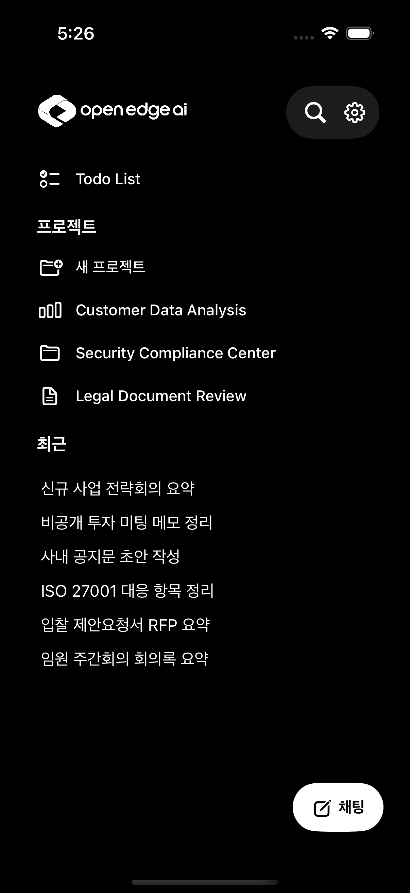
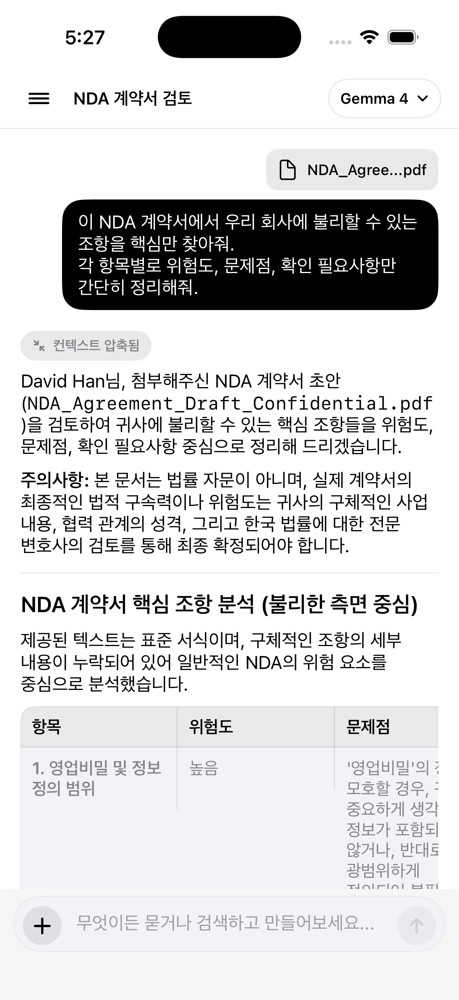
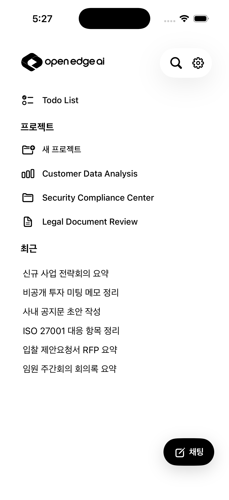
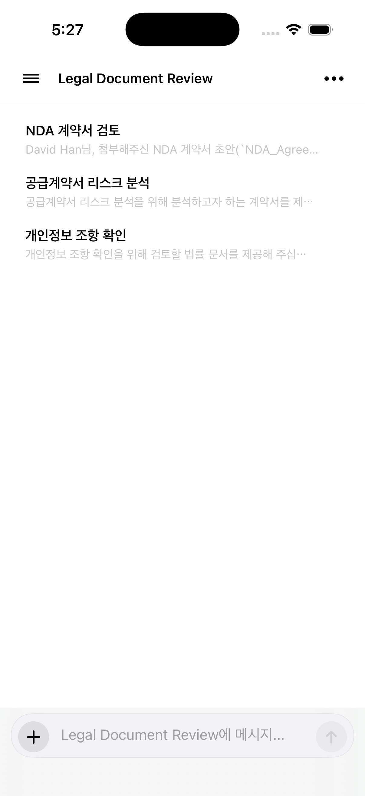
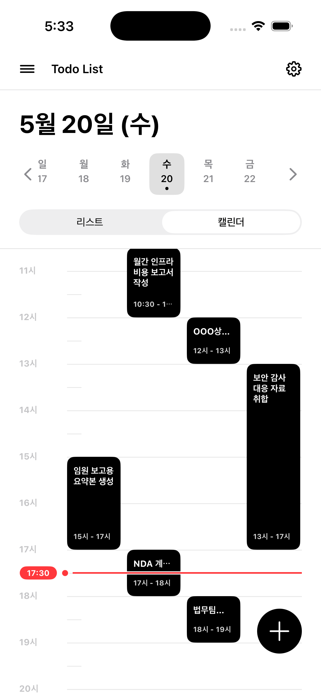
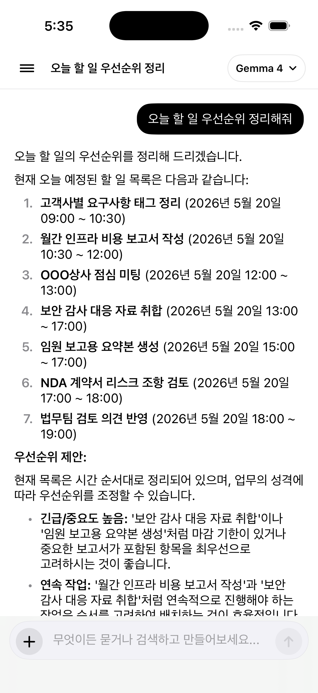

Project, file, and schedule context enter one workspace.
Public Beta Access
Ship Workflows, Not Just Prompts.
Open Edge AI turns project rooms, document review, Todo planning, and local model chat into one mobile workspace that keeps work moving from vague request to usable result.
Trusted by the team
Customer Data
Security
Legal Review
Todo List
Gemma 4
On-device
import { Agent, Workflow } from "@open-edge/core";// Generated by Planner Agentexport const legalReview = async (request) => {const nda = await Agent.attach("NDA_Agreement.pdf");const risks = await Agent.analyze(nda);return Workflow.createTodoPlan(risks);};


Document risks and task blockers are compressed into action.
Todo and calendar views make the next step visible.
Local model answers become usable workflow output.
APP COMPONENTS
Current product UI, reduced to the pieces users recognize.

프로젝트
새 프로젝트
Customer Data Analysis
Security Compliance Center
Legal Document Review
NDA_Agree...pdf
이 NDA 계약서에서 우리 회사에 불리할 수 있는 조항을 핵심만 찾아줘.
NDA 계약서 핵심 조항 분석
위험도, 문제점, 확인 필요사항을 항목별로 정리하고 후속 Todo를 만들 수 있도록 요약합니다.
항목
위험도
확인
5월 20일 (수)
월
18 화
19 수
20 목
21 금
22
18 화
19 수
20 목
21 금
22
리스트
캘린더
고객사별 요구사항 태그 정리
⌄
오늘 · 할 일
보안 감사 대응 자료 취합
13시 - 17시
FEATURES
Every work surface is defined around execution.
01
Project Rooms
Customer analysis, security compliance, and legal review live as separate rooms with recent context and fast chat entry.

Planner
Reviewer
Scheduler
Document Review
Attach contracts, compress context, and receive structured risks, issues, and follow-up checks in the same conversation.
Todo Planning
Switch between list and calendar views, then ask the model to reorder today’s work by urgency and sequence.
Local AI First
Gemma 4 model controls, private workspace defaults, and mobile-native flows keep sensitive tasks close to the device.
WORKFLOW
From document intake to scheduled work in one loop.

Start from a project
NDA review, contract risk analysis, and privacy clause checks stay grouped under the Legal Document Review room.

Turn answers into schedule
AI output can become visible blocks on the day timeline, so the next action is not buried inside a chat transcript.

Ask for priority
The assistant reads the day’s tasks and proposes ordering by deadlines, importance, and task dependency.
READY FOR THE NEXT BUILD